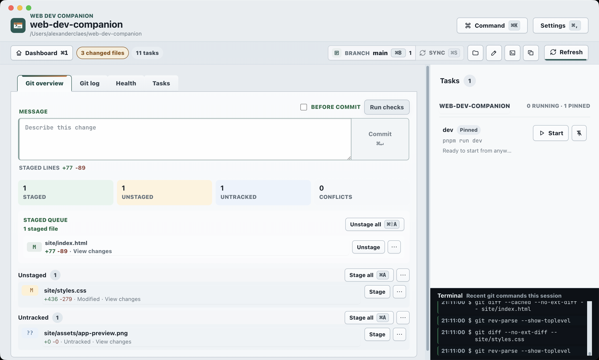

Repository overview
Save projects, pin the ones you use most, scan folders, and search local repos.
Free alpha desktop app
Keep an eye on your local repos, Git changes, project health, and scripts without bouncing between terminals.
Web Dev Companion is a small desktop app for people who work across a bunch of local repositories.
It helps you see what changed, open the right folder, run scripts, and keep command output tied to the project it came from.
This is the Tasks view for a local repo, with pinned commands on the left, runnable project scripts on the right, and terminal output below.

Save projects, pin the ones you use most, scan folders, and search local repos.
See branches, changed files, recent commits, diffs, staging, and sync status.
Start detected npm, Gradle, Maven, Rails, and Rake tasks in managed terminals.
Run local checks before you commit, switch branches, or move to another repo.
Pick a repo, check its state, run a script, and keep the output where you can find it again.
Open saved projects, pinned repos, search results, or newly scanned folders.
See branches, remotes, changed files, commits, and health checks together.
Open your editor or terminal, start scripts, and watch the output.
Web Dev Companion is MIT-licensed and free to use. The alpha is already useful, but expect rough edges while it evolves.
macOS disk image. Download it, open it, and drag the app into Applications.
Download for macOSWindows x64 installer for the current alpha.
Download for Windows